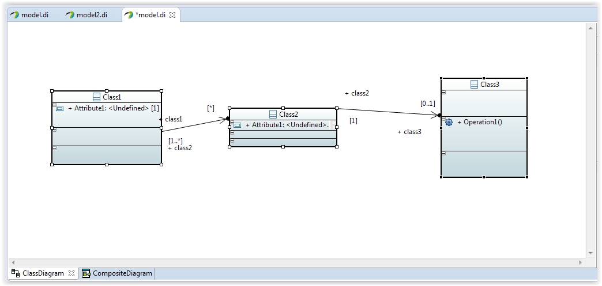
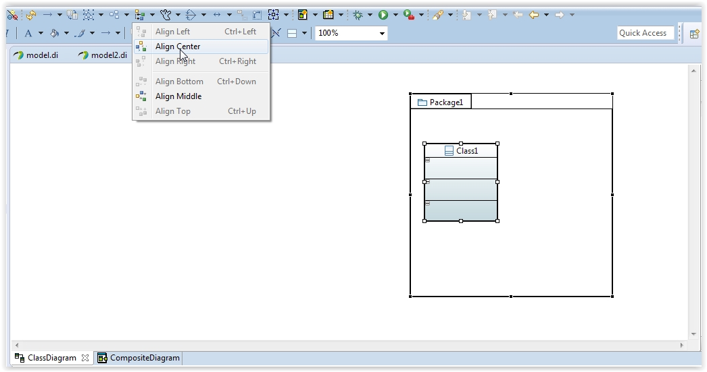
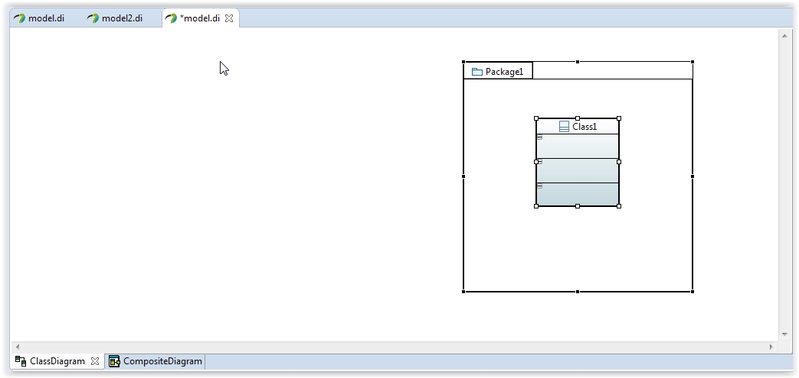
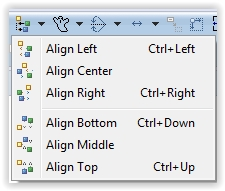
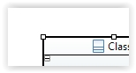
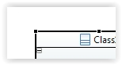
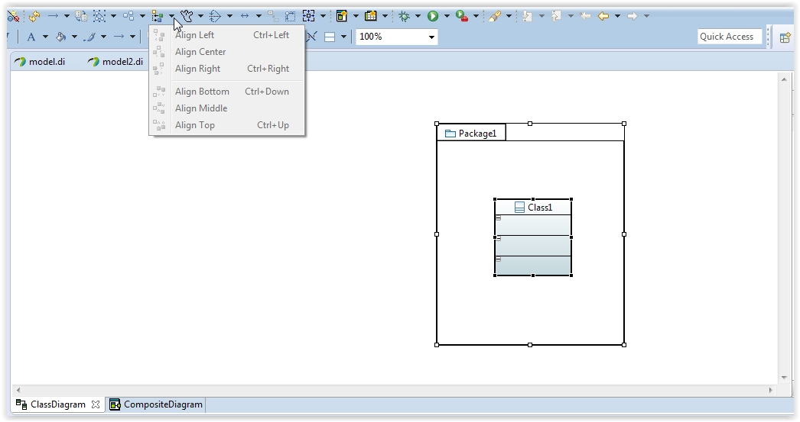
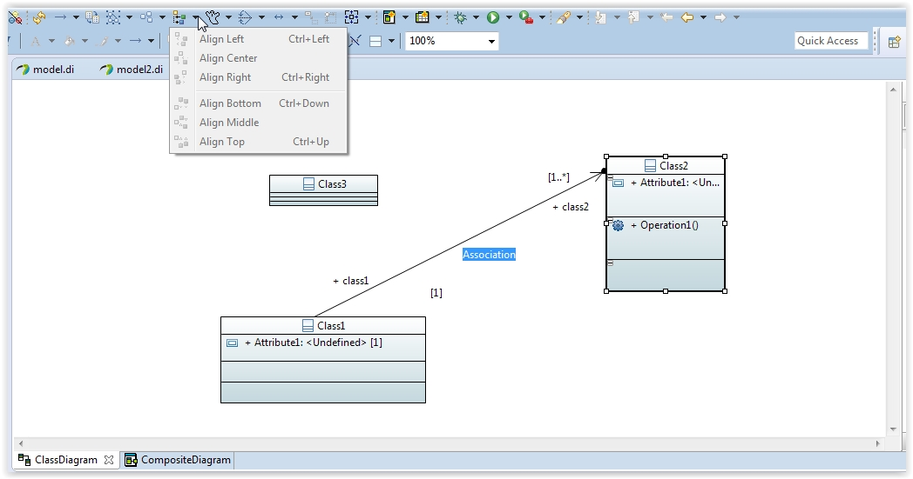
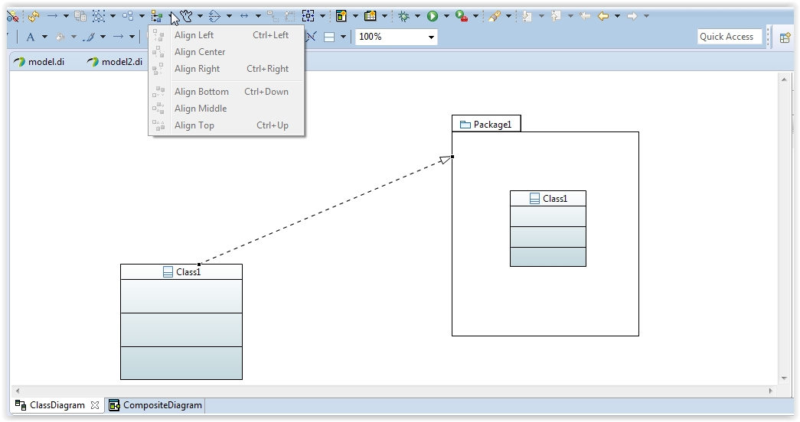

- 
- In this case the reference object is the right one.
- In this second example, the object (the Class ) is aligned on his parent (the Package), the unauthorized alignment appears disable (in grey)
- 
- 
Alignment Tool is available in the Papyrus toolbar:

Alignment allows to align the different objects of the model based on a reference object.
The reference object is basically the last object selected (primary selection) and can be identified with the handles color:
|  |  |
To implement Alignment, some rules have been defined.
The Alignment Tools allows 6 types of alignment:
These types can be disable if the alignment is not possible. Here is the different rules on which the alignment is based:
Here under, some examples of using of alignment tool.
Basically, alignment is used in order to make the model easier to be read and more aesthetic. To align objects:
In this section, some examples of alignment in case of hierarchy between objects (parent / children).
In this section, some examples of labels alignments.
Edges alignment could sound not realistic. Actually, edge alignment is an alignment between the extremities of the edge, to make the edge horizontal or vertical. Example: Standard edge alignment
The extremities are alignment in order to have an horizontal connection. The connection handles remained at the same place on the object
This section will describe some limitations of the alignment tool.
A parent cannot be aligned on one of his child: 
The extremities (source or target )of a connection cannot be aligned on any Labels of this connection. 
To make the edge alignment available, the edge handles should correspond to the same direction (horizontal or vertical). In the following case, source handle is on TOP and target handle is on LEFT. it is then impossible to align the edge. 